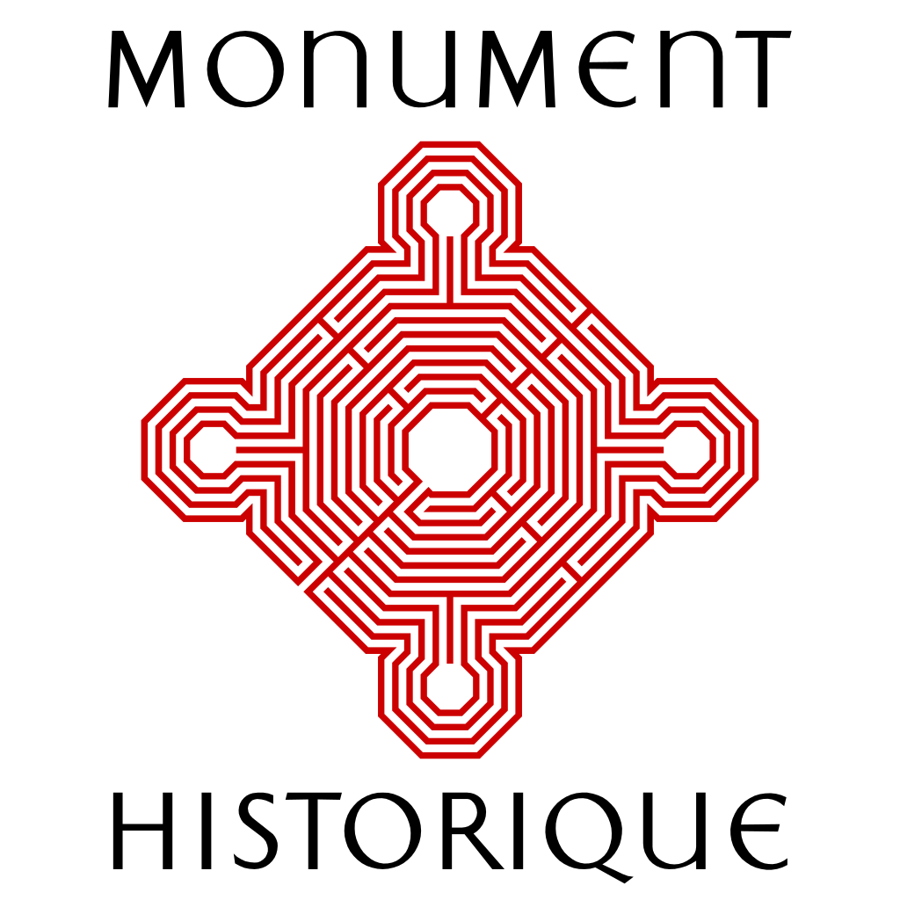

Situé dans le pavillon de l'Hôtel-Dieu où est né Gustave Flaubert, et où son père occupa un poste de chirurgien, ce musée présente des souvenirs de la famille Flaubert et évoque l'histoire de la médecine du moyen-âge au début du XXe siècle.
Une importante collection de céramique, de littérature et de livres anciens se trouvent dans ce musée hospitalier.